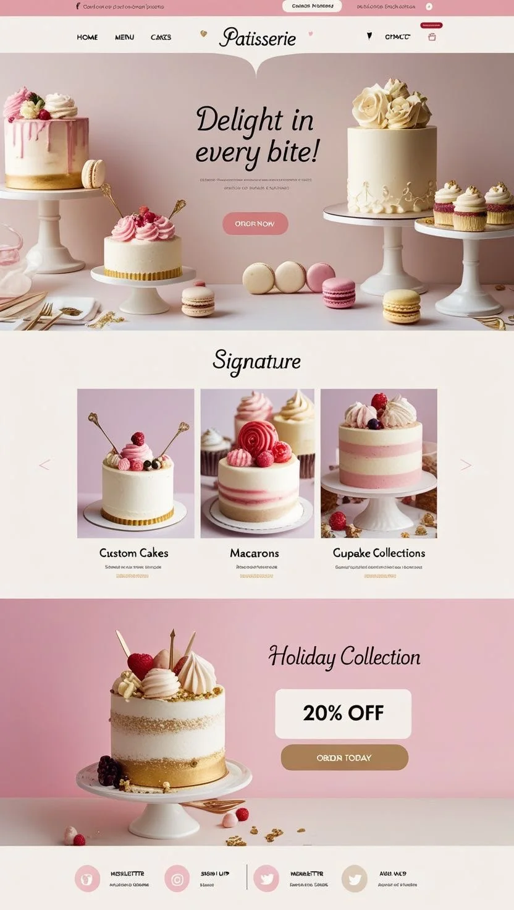
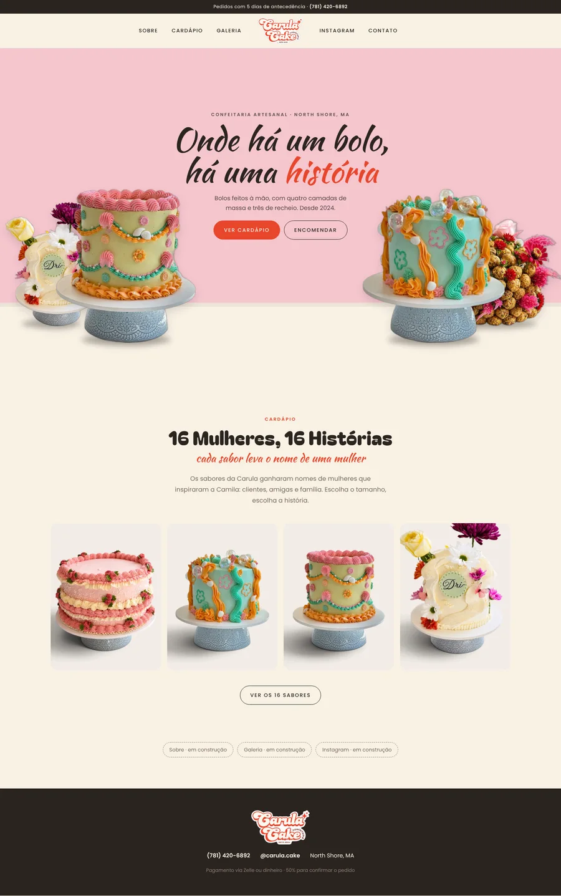
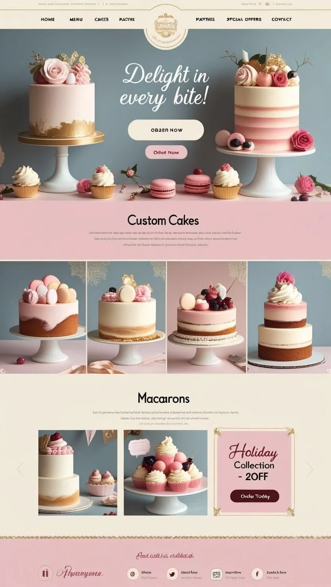
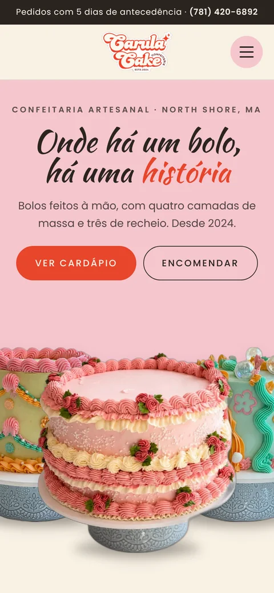

Referência × Carula
A versão nova segue a vitrine de confeitaria das referências: fundo rosa, bolos de verdade em suportes dos dois lados, título em letra cursiva no centro e uma fileira de fotos logo abaixo.
Abrir o site
No computador

Referênciaa que você mandou 
Carula Cakefotos reais da Camila
No celular

Referência 2logo no centro do menu 
Carula Cakecapa no celular
Da referência 1: parede rosa, bolos em suportes à esquerda e à direita, frase em cursiva no meio, botão principal cheio e secundário com contorno.Da referência 2: logo no centro do menu, com os links dos dois lados, e a fileira de fotos sem moldura.Mantido do seu briefing: paleta, as três fontes, o menu hambúrguer no celular e a rolagem suave.